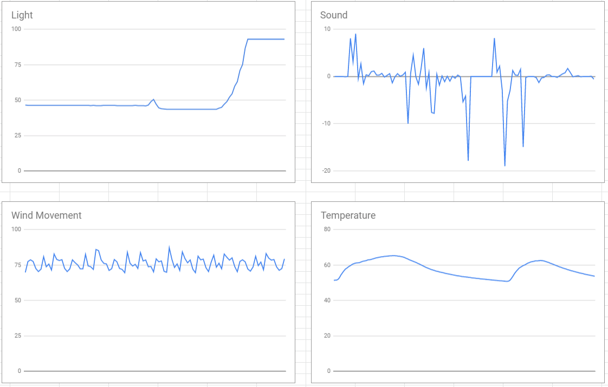
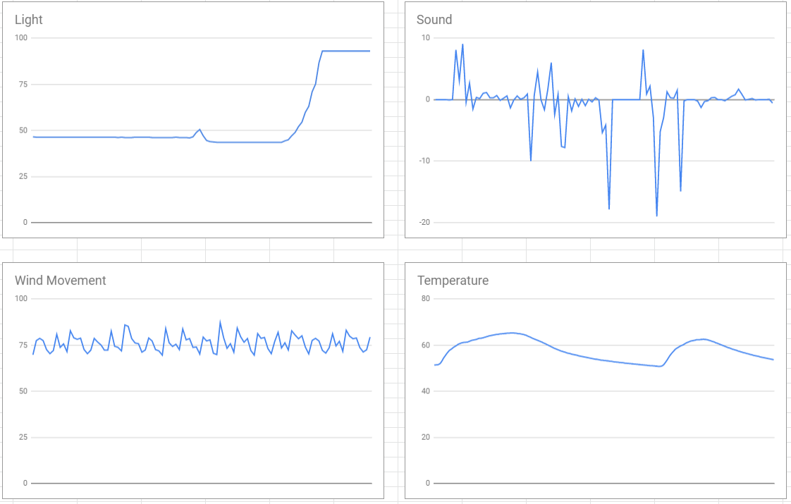

Home
Portfolio
About Me
Portfolio
Project 1

Our project is Tic Tac Turtle. Instead of X's and O's there are turtles. When you first run the program you are asked to press Enter to start. Next, the program shows a new screen with the Tic Tac Toe board. You will also see columns, X, Y, & Z, and rows A, B, & C. In the console the first player and second player are asked to type in the box or square they want to go to. The program also has a collision system to detect if a player puts their turtle on an occupied square and asks that player to re-type their desired box. Then you play until someone wins. That's a quick summary of our project.
Our project is Ice Fishing. When you first run the program you are asked for your name so that it can be updated in the leaderboard if you make it. Next, you play the game by pressing the up and down keys to move the hook. When the hooks hits a fish you catch it and it adds five points to your score. You have 20 seconds to catch as many fish as possible. Once the timer runs out the screen clears and the leaderboard is shown on the screen. At the bottom of the leaderboard the program tells you if you made the leaderboard and if you made top three by stating, "Gold", "Silver", or "Bronze". That's a quick summmary of our game.
Our project is Dino In The City. For this project our group made a story in scratch instead of with python. When you first play the program it takes you to a title screen that asks you to press "s" to start. Then you see two characters, Dino and Frank, these characters will go on an adventure. You are given options throughout the story, if you choose wrong then you die and have to restart, if you choose correctly then you are able to move to the next scene and choose another option. At the end of the story Dino and Frank go home and conclude their day of adventure. That's a quick summary of our story.
 

We concluded that the data shown suggests that the rover is in the Desert Plains. The light is not low, as described in the Inland Forests or Marsh Lands, and there is no indication of clouds, as described in the Rocky Mountains. The temperature does not “cool off quickly” like in the Tropical Islands, so the only option that remained was the Desert Plains. The light based on the data is steady throughout the night because of the lack of interruptions and clouds, and deserts do not have a lot of clouds. The constant chirping and sounds of alien animals can be shown in the graph due to the numerous spikes in the graph representing an individual sound. Finally, the constant winds are illustrated in the graph as each peak and valley are at the same location throughout therefore the winds are constant and blow at a similar rate. To conclude we choose the desert plains biome as the correct biome that the rover is located due to the compelling data presented.